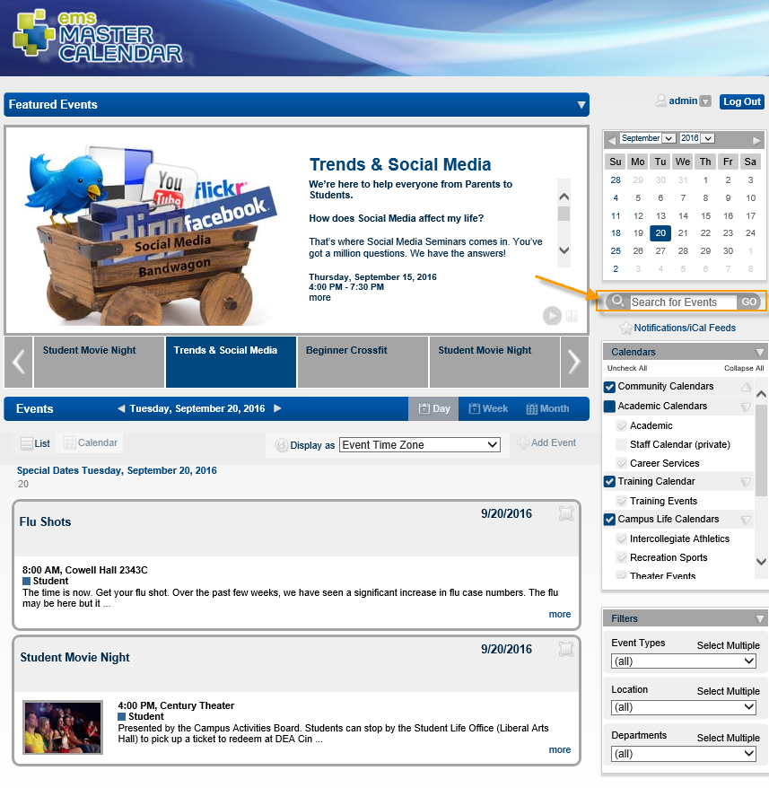
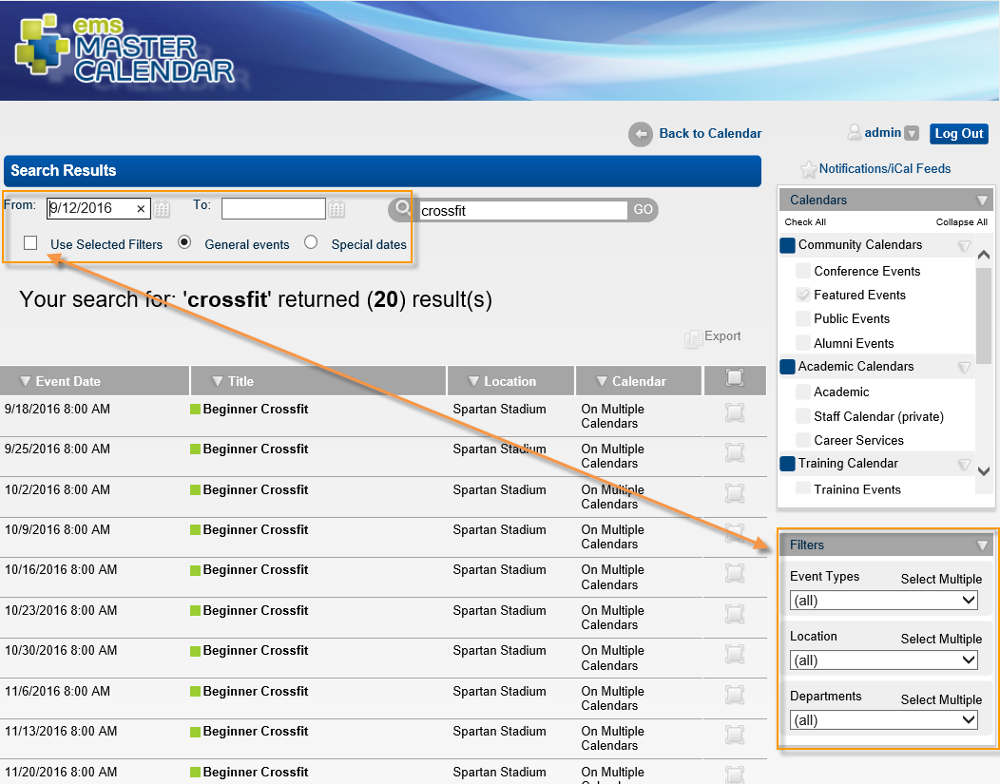

On the Master Calendar main menu, click Search. The Search page opens. This page contains all the fields that you use to specify the search criteria. It also contains a list of all calendars to which you have access either as a guest or user.

In the search results that appear, filter your search criteria.

See Also: Export Search Results.